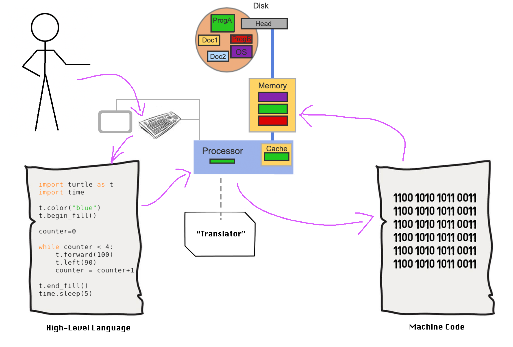

CSC 111
Introduction to Computer Science Through Programming
Smith Computer Science
Introduction to Computer Science Through Programming
Smith Computer Science

There are two main types of programs: applications, and the programs related to the operating system.
To execute a high-level language in a machine, we need to get the human-readable statements into machine-readable form and then execute it.
There are two main ways to do this:
Python is written in a series of statements, each of which demand some action from the computer.
Each statement is a block of code (very commonly a single line of code). Statements can be expressions, assignments, comments, or control structures.
We will use an online visualizer to show how the code works. This is interpreting the code and showing how it works with simple visualizations.
go to this link
Activity 3 [1 minute]:
You will notice that we used the construction:
print ( <something> )
to get the program to display output in the console. Above, we're asking Python to display a string literal;
A string literal is text to be displayed literally (not executed). It's the stuff between quotes (or double quotes);
A function is a procedure / routine that takes in some input and does something with it (just like in math)
Some get converted to a value; some cause something to be displayed in the console; some get information from the keyboard; some do stranger and cooler things.
We will be using some functions that are called built-in because they come with Python.
Later, we'll make our own!
In general, functions have a special name (print in this case), and parentheses after the name.
IF the function needs input to "do its thing", it should be placed between the parentheses:
\[
\texttt{print ( "this is the input that print uses" )}
\]
It can also print the content of variables :
\[\texttt{print ( x )} \]
Or the result of an expression:
\[ \texttt{ print ( (x + 17)/2 )} \]
Variables are like boxes that can store different objects.
In Python, the "things" you store inside variables are called values.
This is similar to the concept of variables used in algebra:
\[ x = 5x - 24\]
However, in Python, instead of "solving for x", we actually want to be able to store values in a known location (and under a known name).
So, in Python, we read the statement:
\[ x = 5\]
as "we assign the value 5 into the variable called 'x'"
(we sometimes say "x is equal to 5" but in Python, we mean "x is assigned the value 5").
This means that we need to be able to assign a value to a variable. In python, we do this in the following way:
x = 5 y = 2 z = x + y print(z)
x = 5 x = 3 print(x)
x = 5 y = 5 z = 5 w = 11 num = w + x + y + z print(num)
x, y, z = 5 w = 11 num = w + x + y + z print(num)
Identifiers refer to the names used to create a variable.
Valid identifiers are those that follow three rules:
Some words are reserved in Python. That means they can't be used as Identifiers.
These are reserved because they are either the names of built-in functions, or keywords in the construction of a special block of code that helps you do more powerful programs (code constructs).
We'll look at these later, but the following are the reserved words in Python:
| FALSE | await | else | import | pass |
|---|---|---|---|---|
| None | break | except | in | raise |
| TRUE | class | finally | is | return |
| and | continue | for | lambda | try |
| as | def | from | nonlocal | while |
| assert | del | global | not | with |
| async | elif | if | or | yield |
A convention is not a strict rule, it is a "way of doing things" that a majority is comfortable with.
In python, there are some coding conventions that we should know:
Comments are parts of a program that are human readable and that the computer skips when interpreting.
They are placed there to add context or clarify the functionality of a program.
Adding clear and informative comments is crucial to good programming.
These are ways of commenting:
# This is a comment print("This will run.") # This won't run # print("This print is 'commented out'.") # this is a commented comment # If you want multiline comments # you have to add the hash mark # in each line ''' Sometimes people use tripple quotes But that's technically Wrong (more on that later) ''' print("This is the second statement to run.")
# Name: Example Header # Authors: Pablo Frank & Yak DaRippa # Course: CSC111 # Date: 2021/09/10 # Description: My First Project Program. print("The amount Yak helped was: ") # We'll see modulo and int-div next class print((2**5//6)%5)